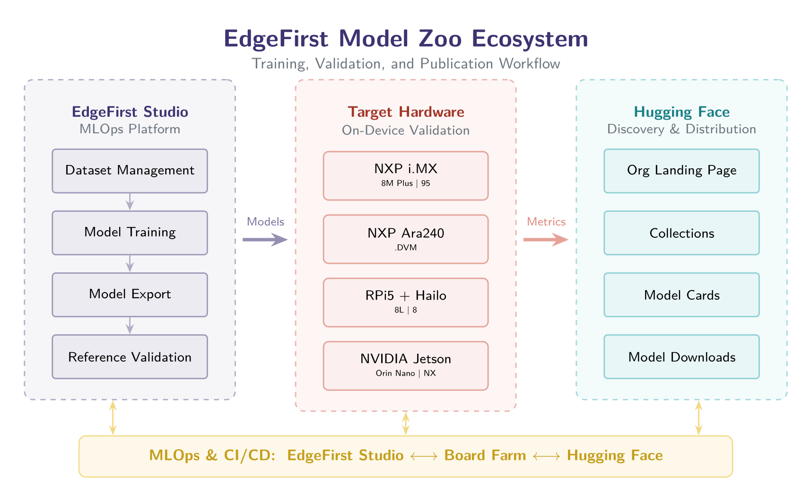
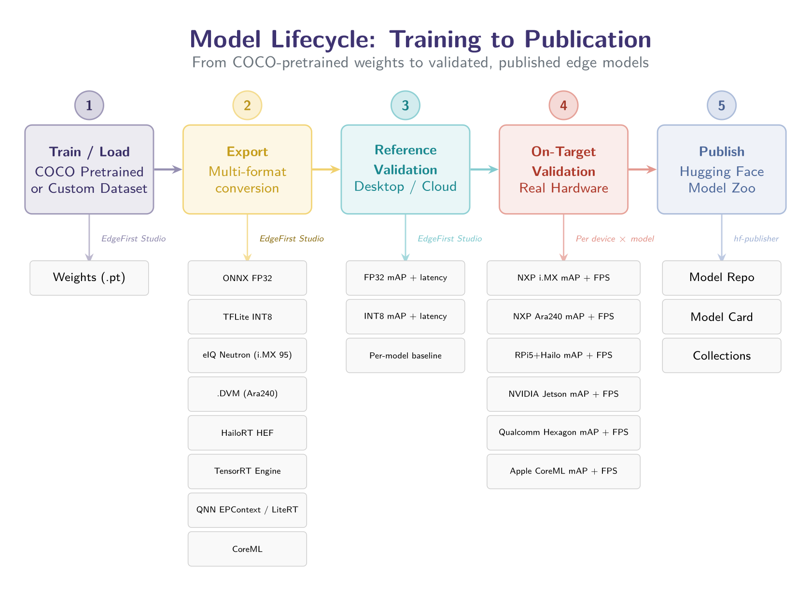
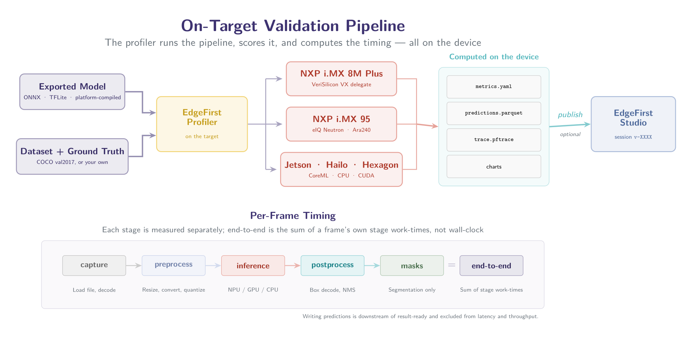

The EdgeFirst Model Zoo is a multi-platform, multi-model collection of production-ready vision models with full profiling and validation results for every published artifact. Each model is trained, exported, quantized, and compiled in EdgeFirst Studio, then validated on the actual deployment hardware — accuracy and timing are measured by the same pipeline that runs the deployed model, never a separate benchmark configuration.
On-target measurement is performed by the
EdgeFirst Profiler:
it runs full inference on the device through each runtime's native delegate, captures per-image
predictions as Parquet (inference results) and a Perfetto trace (.pftrace, detailed
per-stage timing), and ships both to EdgeFirst Studio for processing and publishing. Every
accuracy or timing number on this page links back to a public Studio validation session you can
inspect yourself. The Profiler is built on our open-source stack, including the
EdgeFirst HAL —
see github.com/EdgeFirstAI.



.pftrace to Studio for scoring and publication.Introducing the EdgeFirst Model Zoo is the read-first companion to this grid: what is in it, why every published figure links back to the validation session that produced it, and how to reproduce any of it on your own board with your own model and dataset.
Want the full story behind these numbers? The EdgeFirst Perception Index (EFPI) is the technical report behind this grid: how the benchmarks were collected, how each model was optimized for its target, and what the results say once you read them across platforms instead of one at a time.
| Repo | Family | Task | Sizes | Nano mAP50-95 (ONNX) | Nano mAP50-95 (INT8) | Last modified |
|---|
Each point is a public validation session: color = platform, shape = model family (● YOLOv5 · ■ YOLOv8 · ▲ YOLO11 · ◆ YOLO26). X axis is the realized sustained throughput on a log scale — the measured full image load → decode → preprocess → inference → postprocess pipeline, not bare inference time and not the accelerator's core-throughput ceiling. ⚠ flagged sessions are shown at their measured accuracy.
Each point is a public validation session: color = platform, shape = model family
(● YOLOv5 · ■ YOLOv8 · ▲ YOLO11 · ◆ YOLO26). X axis is end-to-end per-image latency
(load → decode → preprocess → inference → postprocess) on a log scale — lower is better, so
the top-left is the sweet spot. For the NXP i.MX 95 Neutron runner the latency-optimized pipeline
(--serialize-core) is shown here; its throughput-optimized counterpart is on the
chart above.
Each point is one model × platform validation session: color = platform, shape = model family (● YOLOv5 · ■ YOLOv8 · ▲ YOLO11 · ◆ YOLO26). X is the core-throughput ceiling (FPS) — the accelerator's compute ceiling (1000 ÷ isolated device-compute time); Y is the realized FPS actually delivered by the full validation pipeline. The dashed diagonal is parity (realized = ceiling): the closer a point sits to it, the less the host pipeline — JPEG decode and the validation-only 0.001 confidence threshold — costs on that platform. The ceiling is a single-stream figure, so many-core CPU hosts that run several inference workers in parallel can legitimately land above the line. Deployments with a live camera feed and production thresholds run closer to the diagonal than these validation figures.
⚠ Model accuracy on this platform is below our expectations — we are investigating the results to make improvements.
Additional model families and platforms are added to the zoo as their on-target validation completes.
Top 20 fastest validated configurations · every runtime, precision and decode variant ranks on its own · full image load → decode → preprocess → inference → postprocess pipeline · click a metric header to re-rank
| # | Platform | Fastest model | Realized FPS | Core Ceiling FPS | E2E latency (ms) |
|---|
Realized FPS is the measured steady-state throughput — stages overlap across frames, so it exceeds 1000 ÷ end-to-end latency. Core-throughput ceiling (FPS) (~) is the accelerator's per-stage compute ceiling, approachable in production when the accelerator — not host JPEG decode or the validation-only 0.001 confidence threshold — is the bottleneck; see the ceiling chart on the Performance tab. Measured by the EdgeFirst Profiler.
Ranked by COCO val2017 mAP@0.5-0.95 as measured on each platform by the EdgeFirst Profiler. Each entry links to its public validation session on EdgeFirst Studio.
⚠ Model accuracy on this platform is below our expectations — we are investigating the results to make improvements.